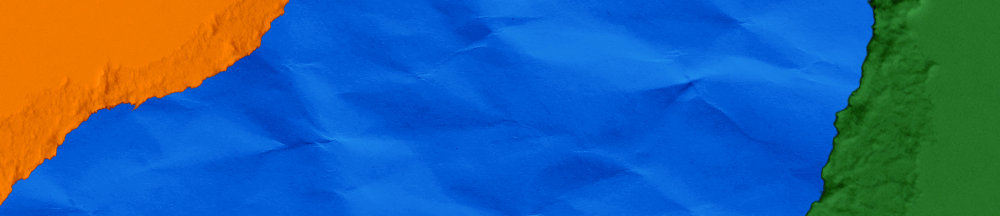

Información del proyecto
La cooperación entre islas multiplica el impacto local. La educación se convierte en herramienta de resiliencia.
Cada territorio, en cooperación, analiza sus necesidades para integrar el cambio climático en los itinerarios educativos. Esta primera etapa sienta las bases de los materiales y herramientas que se desarrollarán a continuación.
Seguimiento del avance del proyecto en tiempo real. Los datos se actualizan a medida que el proyecto avanza.
Interreg MAC 2021–2027
Programa de Cooperación Territorial Interreg VI-D Madeira-Azores-Canarias (MAC) 2021–2027 — II Convocatoria de Capitalización
17 octubre 2025 — 17 octubre 2027
24 meses de ejecución repartidos en tres etapas: Comprender, Adaptar e Implementar.
600.174,32 €
Cofinanciado por el Fondo Europeo de Desarrollo Regional (FEDER) a través del Programa Interreg MAC.
Canarias · Azores · Madeira · Cabo Verde
Cuatro territorios insulares del Atlántico Macaronésico unidos por un desafío climático común.
Documentos oficiales descargables: estrategias, planes, normativa y memorias.
SOCIO PRINCIPAL:

SOCIOS FEDER:
SOCIO DE TERCER PAÍS AFRICANO: